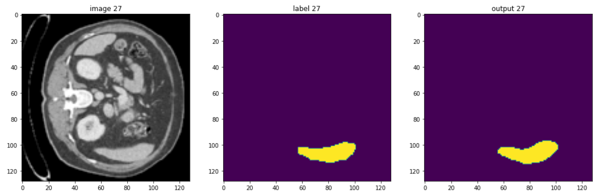

Selected Projects

Computer Vision · Agriculture
Tree Labeling via Pattern Recognition
Spatial labeling algorithm using YOLOv4 to uniquely identify orchard trees across video sequences. Applied centroid and dimensional analysis to minimize label reassignment across frames.
View Paper
Medical Imaging · Visualization
Ultrasound Visualization using VTK
VTK-based application for interactive visualization of 3D ultrasound data. Implemented image enhancement, isosurface extraction, and Delaunay triangulation for medical visualization workflows.
View Paper
Bioinformatics · Virtual Reality
Protein 3D Structure Visualization in VR
VR application built in Unity3D with Oculus Rift to visualize 3D protein structures predicted by AlphaFold 2. Converted 30 protein models from .pdb to .obj format using VMD and developed interactive navigation and selection features.
View Video
Computer Vision · Deep Learning
RGBD Image Stylization
Style transfer pipeline for RGB-D images combining appearance and depth information to produce geometrically consistent stylized outputs.
View Paper
Biomedical Imaging · Segmentation
Liver Segmentation & Tumour Detection
PyTorch and MONAI-based pipeline for automated liver segmentation and tumour detection in medical imaging datasets. Optimized preprocessing and training strategies for improved inference efficiency.
View on Github
Object Detection · Drone Imagery
Cattle Detection under Occlusion
Evaluated multiple object detection algorithms on drone-captured cattle datasets under challenging occlusion conditions. YOLOv7 demonstrated superior performance over alternative frameworks.
View Paper